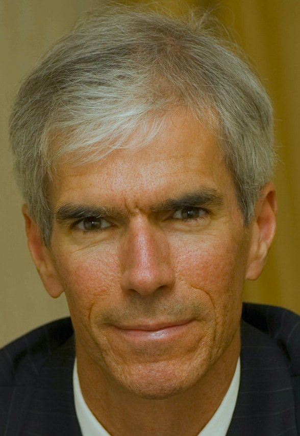

Alain Carrier
Célébrant laïc agréé
Grand-Montréal
Des cérémonies funéraires intimes et personnalisées, préparées avec les proches pour rendre hommage à la personne aimée.
Écrire à AlainUne cérémonie qui lui ressemble
Le rôle d’un célébrant commence avant la cérémonie. Alain écoute les proches, recueille ce qu’ils souhaitent transmettre et prépare avec eux le fil de l’hommage. Il en assure ensuite la célébration.
Souvenirs, musique, lectures ou gestes significatifs peuvent trouver leur place dans la cérémonie. Leur choix et leur déroulement se discutent avec Alain et avec les personnes concernées.
Il s’agit d’un accompagnement pour concevoir et animer un hommage, et non d’un service de crémation ou d’organisation funéraire.
Construire l’hommage ensemble
On se parle.
Vous pouvez commencer par raconter qui était la personne, ou simplement poser vos questions. Il n’est pas nécessaire d’avoir déjà tout décidé.
On choisit ce qui compte.
Avec les proches, Alain peut explorer les souvenirs à partager et la place souhaitée pour la musique, les lectures ou un geste de mémoire.
Alain prépare et célèbre.
Le contenu et le déroulement se conviennent ensemble. Alain donne une voix à l’hommage lors de la cérémonie.
Les mots d’Alain
« Mon éducation, mes expériences de vie et mon appréciation pour l'expérience humaine me permettent de vous assurer une célébration digne et respectueuse de la personne tant aimée. Nous préparerons ensemble la commémoration en établissant les souvenirs d’amour et de bonté légués par la personne chère qui vous a quitté. Cet héritage établira une base pour un souvenir éternel plein de respect et d'amour qui s’enracinera dans votre cœur favorisant ainsi la paix pour un laisser-aller. »
Alain Carrier
Un engagement dans le métier
Alain Carrier Rituel (ACR) est né d’un besoin de célébrations funéraires intimes et personnalisées. Alain a créé le groupe Cérémonie personnalisée. Cofondateur de Célébrant laïc agréé (CLA), il est impliqué dans la formation et le coaching. Il est aussi célébrant laïc agréé du Groupe Louis Lafrance Mémorial.

Écrire à Alain
Pour préparer un hommage ou poser une question, choisissez un sujet si cela vous aide. Votre logiciel de courriel s’ouvrira avec un message que vous pourrez personnaliser avant de l’envoyer.
Préparer mon courrielOu écrivez directement à alaincarrier.cla@gmail.com
Vos choix restent dans cette page. Aucun message n’est envoyé sans votre action dans votre logiciel de courriel.